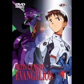

|

"Shin Seiki Evangelion" (1996 - 130m)
SINOPSE
Evangelion foi eleita a melhor serie de animè no Japão em 1996 no Grande Prémio de Anime organizado pela revista japonesa Animage, e em França em 1997 pelos leitores de Animeland.
A qualidade do cenário, o cuidado dedicado à realização (animação, musicas, design), a mistura de esoterismo e de ficção cientifica são uma referencia para todos os amantes de desenhos animados. O estúdio GAINAX (Nadia, Honneamise) apresenta aqui uma serie com um fim surpreendente e controverso. Resumindo: Uma verdadeira serie de culto!
O 1º DVD de uma série de 6 (5 ep. no Vol 1 e 2 e 4 ep. nos Vol. 3, 4, 5 e 6).
A.D. 2015. Já se passaram quinze anos desde esse dia do ano 2000 quando morreram dois milhões de seres humanos devido ao Second Impact, uma catástrofe planetária que arrastou glaciares e submergiu uma enorme parte do planeta. Hoje reina uma calma estranha sobre Tokyo-3. A cidade está deserta: todos os habitantes foram convidados pelas forças da O.N.U. a se refugiarem nos abrigos. As tropas cercam a cidade. Por todo o lado batalhões armados com mísseis aguardam a ordem de ataque. No quartel Geral da NERV, militares e cientistas esperam nervosamente pela confirmação do seu maior medo. Shinji Ikari está sozinho na cidade à procura de uma Misato Katsuragi, membro da NERV. De repente uma forma sombria e gigantesca emerge das aguas. Os Anjos voltaram...
Sinopse dos Episódios / Genesis de 1 a 5:
Genesis 0:1 O Ataque do Anjo/ Angel Attack
Os Anjos voltaram com o seu terceiro mensageiro da morte, Sachiel que atacou sem clemência a cidade fortaleza Tokyo-3, onde se encontra o Quartel General da NERV, a única força preparada para o combate contra os terríveis Anjos.
NERV criou um bio-mecha gigante, o Evangelion, o único ser capaz de gerar o seu próprio AT Field (Absolute Terror Field), a arma mortífera dos próprios Anjos. Só crianças nascidas exactamente 9 meses depois do segundo impacto, é que podem possuir a habilidade de sincronizar o Evangelion, e consequentemente pilotá-lo. No entanto REI a “first children” do EVA00 está gravemente ferida e é necessário mandar vir um novo piloto: Shinji Ikari o filho de Gendo Ikari, o Comandante cientista da NERV. A cidade está deserta. Shinji espera Misato...
Genesis 0:2 Espaços Desconhecidos/ The Beast
Shinji esforça-se para aprender a pilotar o EVA 01. O Anjo aproveita a fraqueza e ataca com toda a potência. Shinji acorda numa cama de hospital. Não tem onde viver em Tokyo-3 pelo que a Misato convida-o para ficar com ela. Ele, contrariado por estar na NERV, sem vontade de pilotar os EVA e ressentido com a falta de atenção e sensibilidade do pai, só muito a custo é que aceita a proposta. É então que a Misato lhe explica a força do AT Field e que o congratula pelo seu heroísmo!
Genesis 0:3 O telefone que não toca / A Transfer
Shinji está sempre sózinho e triste. Desencantado e desmotivado. Sem vontade alguma de voltar a subir a um EVA. Não fez amigos na escola e ninguém se interessava por ele até descobrirem que é um piloto dos EVA. Entretanto Tokyo-3 é atacado novamente, a população enviada para os abrigos e Shinji chamado a combate. Os seus colegas de turma, Aida e Tôji, não resistem à tentação de ver o duelo de perto...
Genesis 0:4 A Chuva depois da Fuga / Hedgehog Dilemma
A pressão torna-se demasiada e Shinji não aguenta. Foge da NERV e caminha sem rumo, quando encontra o seu amigo Kensuke que está a acampar sozinho. Procurado e capturado pelos seguranças da NERV, Shinji é levado de volta à NERV onde confessa que quer abandonar as suas responsabilidades e voltar a casa. É desiludida e triste que Misato o leva ao comboio de retorno...
Genesis 0:5 Rei, Para além do Coração/ Rei I
Estamos 22 dias antes, no dia em que a Rei Ayanami está a testar o EVA 00. O teste é subitamente abortado. Alguma coisa correu mal! O EVA perdeu o controle e começou a partir o vidro protector da sala. Rei conseguiu ejectar-se, mas ficou presa dentro da sua “Entry Plug”. O Comandante Ikari desesperado abriu à força a porta da Entry Plug queimando as mãos.... A afeição de Ikari à Rei provoca ciúmes e apreensão em Shinji, o seu filho. Suspeita-se que o teste do EVA 00 tenha falhado devido a perturbações mentais no piloto: a Rei...
|
VIDEO
Standard 1.33:1 [4:3]
AUDIO
Japonês Dolby Surround
Português Dolby Surround
Francês Dolby Surround
Espanhol Dolby Surround
LEGENDAS
Português
Francês
Espanhol
OPÇÕES ESPECIAIS
Menus Animados
Índice das Cenas
Bónus
DISCOS/LADOS
1 disco de 1 lado
ESTÚDIO
Gainax
NAS
TV Tokyo
Tatsunoko Productions Co. Ltd.
DISTRIBUIÇÃO
Dynamic Portugal, SA
Lusomundo Audiovisuais, SA
|